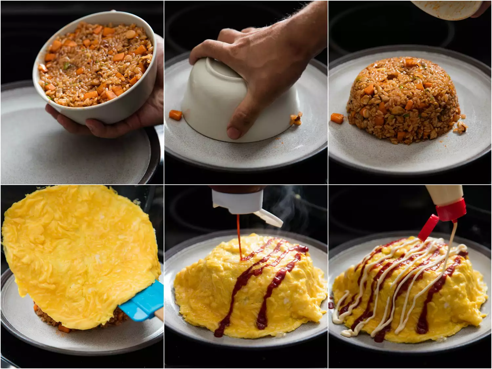

Omurice
A simple, satisfying dish of fried rice with diced chicken, seasoned with an unlikely ingredient - ketchup - and topped with a fluffy omelette.
For those unfamiliar with omurice, it's a Japanese invention that combines an omelette with fried rice. You'll often hear it referred to as omuraisu (a contraction of the words omuretsu and raisu, the Japanese pronunciations of "omelette" and "rice"), or omumeshi, which fully translates "rice" into Japanese.
Ingredients
- 2 cups cooked white sushi rice
- 5 tbsp vegetable oil
- 1/2 cup minced yellow onion
- 1/2 diced carrot
- 3 oz diced skinless, boneless chicken thigh
- 1/4 cup ketchup, thinned with 1 tbsp water, plus more ketchup for serving
- 1 scallion, thinly sliced
- Kosher salt and freshly ground pepper
- 4 large eggs, beaten with a pinch of salt
- Kewpie mayonnaise, for serving
Steps
- If using day-old rice, transfer to a medium bowl and break rice up with your hands into individual grains before proceeding. Heat 1 tablespoon (15ml) vegetable oil in a 10-inch carbon steel or nonstick skillet over high heat until lightly smoking. Add half of rice and cook, stirring and tossing, until rice is pale brown and toasted and has a lightly chewy texture, about 3 minutes. Transfer to a medium bowl. Repeat with another tablespoon (15ml) oil and remaining rice.
- Add 2 more tablespoons (30ml) oil to skillet, return to high heat, and heat until smoking. Add onion and carrot and cook, stirring and tossing, until just tender and lightly browned in spots, about 3 minutes. Add chicken and cook, stirring, until cooked through and starting to lightly brown, about 3 minutes.
- Return rice to pan and toss until well combined with vegetables. Add thinned ketchup and cook, stirring and tossing, until ketchup sauce is reduced and each grain of rice is separate and coated in a shiny sheen of ketchup. Toss in scallion, then season with salt and pepper. Scrape rice mixture into a small heatproof bowl, packing it down. Invert a serving plate on top of the bowl of rice, then rotate both so that bowl is sitting inverted on top of plate. Set aside.
- Wipe out skillet with a paper towel and return to medium-high heat. Add remaining 1 tablespoon (15ml) oil and heat until shimmering. Add eggs and stir rapidly with a spatula, while shaking pan to agitate eggs; make sure to move spatula all around pan to break up curds and scrape them from bottom of skillet as they form. Stop stirring as soon as eggs are very softly scrambled and creamy (but still loose enough to come together into a single mass), 1 to 2 minutes.
- Using spatula, gently spread egg in an even layer around skillet and scrape down any wispy bits around the edges. The top surface should be loose and creamy, but if it looks too liquid and raw, let cook, undisturbed, for another few seconds. (If it still flows, you can swirl skillet to send loose egg to the edges, where it will set more quickly.) Remove from heat.
- Lift bowl from rice; rice should hold a mound-like form. Slide open-face omelette on top of rice mound. Garnish with a squeeze of ketchup and Kewpie mayonnaise, if using. Serve right away.
